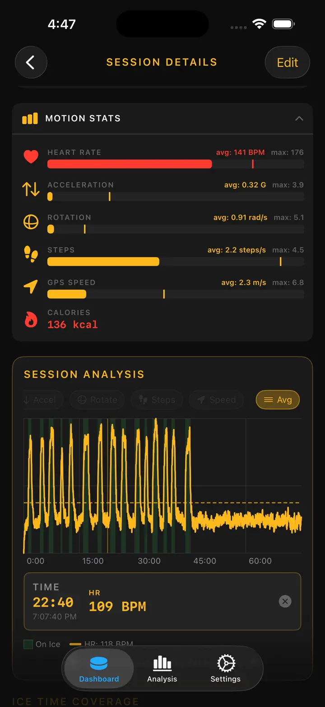

Ice Time Track
Hockey Bytte Treningsspor
Automatisk istidssporing med Apple Watch – nå med utstyrssporing og påminnelser om skøytesliping. Se bytter, statistikk og helse etter hver kamp.
Last ned i App Store
Om appen
Dine bytter. Sporet automatisk.
Ice Time Track bruker Apple Watch til å oppdage når du skøyter og når du er på benken. Ingen knapper, ikke noe styr. Bare start en økt og spill.
HVORDAN DET FUNGERER
Vår bevegelsesdeteksjonsalgoritme analyserer akselerometer-, gyroskop- og GPS-data for å skille skøyting fra hvile. Din iPhone synkroniserer live oppdateringer slik at du kan se statistikk i sanntid eller etter kampen.
FUNKSJONER
- Automatisk byttedeteksjon, bevegelses- og helsesporing
- Total istid og fordeling per bytte
- Kamplog – mål, utvisninger, pauser
- Puls og kalorier per bytte
- Visuell tidslinje for is/benk-mønster
- Økthistorikk med trender
- Stedsmerking for hver ishall
- Kamp-, trenings- og treningskampmodus
- Valgfrie haptiske varsler
- Eksporter data til CSV eller JSON
APPLE INTEGRASJON
Fungerer med Apple Watch. Synkroniserer med Apple Helse.
PERSONVERN
All data lagret lokalt. Ingen konto påkrevd.
Bygget av ishockeyspillere for ishockeyspillere. Kjenn istiden din. Løft spillet ditt.
Ice Time Track forvandler Apple Watch til en intelligent hockeykompanjong som vet nøyaktig når du er på isen og når du er på benken. Ingen knapper. Ingen distraksjoner. Ren automatisk sporing så du kan fokusere på å spille ditt beste.
HVORDAN DET FUNGERER
Start en økt på Apple Watch og glem den. Vår avanserte bevegelsesdeteksjon analyserer data i sanntid. Din iPhone holder seg synkronisert med live oppdateringer – se statistikken fra tribunen eller gjennomgå alt etter sluttsignalet.
HVA DU VIL OPPDAGE
- Total Istid — Vet nøyaktig hvor mange minutter du tilbrakte der det teller
- Bytte-for-Bytte Fordeling — Hvert bytte med varighet, puls og kalorier
- Kamplogger – mål/utvisninger per periode
- Pulssporing — Overvåk innsats under skøyting vs. restitusjon
- Forbrente Kalorier — Nøyaktige data synkronisert fra Apple Helse
- Økttidslinje — Visuelt diagram over is/benk-mønsteret ditt
- Stedsminne — Automatisk merking av ishallen
- Historiske Trender — Sammenlign økter og spor fremgang
BYGGET FOR ENHVER SKØYTER
Enten du spiller i amatørliga, trener hardt eller konkurrerer i treningskamper – Ice Time Track tilpasser seg. Merk økter etter type, legg til motstandernavn og bygg din personlige hockeydagbok.
SØMLØS APPLE INTEGRASJON
- Synkroniserer treninger til Apple Helse
- Kjører i bakgrunnen under økter
- Valgfrie haptiske varsler ved is/benk-overganger
- Optimalisert for lavt batteriforbruk
PERSONVERN FØRST
Dine data forblir dine. Lagret lokalt på enhetene dine. Ingen kontoer. Ingen data solgt. Aldri.
FRA SPILLERE TIL SPILLERE
Bygget av hockeyentusiaster lei av å gjette istid. Ekte tall. Ekte innsikt. Null friksjon.
Last ned nå og lur aldri mer på istiden din.
Knyt skøytene. Dropp pucken. Vi tar resten.
Privacy Policy: https://masawata.net/privacy-policy.html Terms Of Service: https://www.apple.com/legal/internet-services/itunes/dev/stdeula/
Skjermbilder




Ice Time Track
Automatisk istidssporing med Apple Watch – nå med utstyrssporing og påminnelser om skøytesliping. Se bytter, statistikk og helse etter hver kamp.
Last ned i App Store